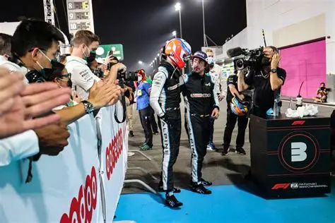

Mercedes brilha com os dois pilotos no pódio do GP do Canadá

A equipe Mercedes conquista um grande resultado no GP do Canadá, colocando seus dois pilotos no pódio. A
consistência e o trabalho em equipe mostraram a força da escuderia na temporada.
Paddock em choque: Verstappen na Mercedes, parceiro ou substituto de George Russell? A rivalidade que
incendeia a F1

Rumores indicam uma possível ida de Verstappen para a Mercedes, o que geraria uma rivalidade intensa com
Russell. O paddock está em alvoroço com as especulações sobre o futuro da equipe.
Lewis Hamilton: Muito além de vitórias

Hamilton é retratado não apenas como um campeão das pistas, mas como uma figura influente dentro e fora da
Fórmula 1, por seu ativismo, representatividade e impacto no esporte.
Onde estão os Brasileiros? Nova geração tenta reconstruir o legado perdido

A ausência de pilotos brasileiros no topo da F1 levanta discussões sobre a nova geração. Jovens talentos
lutam para retomar o prestígio que o Brasil já teve na categoria.
Senna Eterno: Como o estilo do Brasileiro ainda Inspira a Fórmula 1.

O legado de Ayrton Senna permanece vivo na Fórmula 1. Seu estilo arrojado e apaixonado continua influenciando
gerações de pilotos ao redor do mundo, sendo símbolo de garra, técnica e coragem.
Mini‑pilotos conquistam corações no GP do Japão

Durante o GP do Japão, jovens fãs vestidos como pilotos chamaram atenção e emocionaram o público. Com ternos
e capacetes em miniatura, mostraram que a paixão pela F1 começa desde cedo.
De Rookies a Estrelas: A nova geração que está mudando o Grid da F1

Novos talentos têm se destacado rapidamente na F1, conquistando vitórias, fãs e patrocinadores. Eles representam a renovação do esporte e prometem acirrar ainda mais a disputa pelo topo.
Pagantes no Grid: Salvação para algumas equipes e pragas para outras

Pilotos pagantes dividem opiniões: enquanto ajudam equipes menores financeiramente, podem comprometer a competitividade. A presença deles levanta debate sobre meritocracia e sobrevivência na F1.